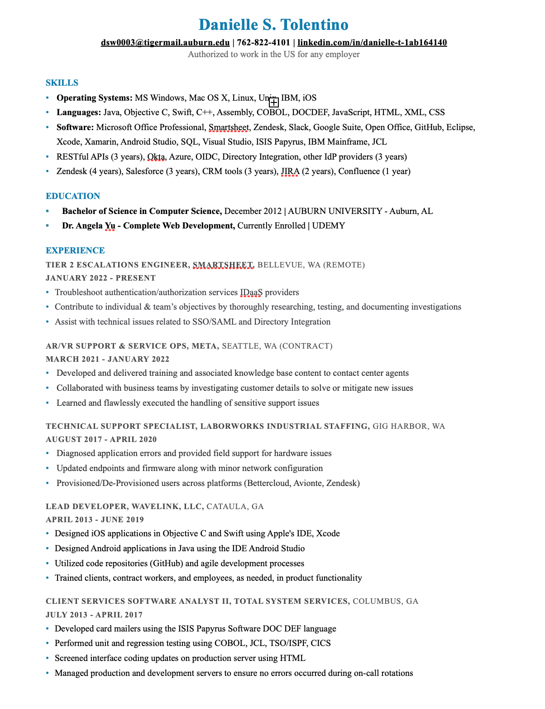

About Me
I'm an aspiring web developer currently seeking a challenging position where I can utilize my technical skills, collaborative mindset, and hands on experience.
Education
- Bachelor of Science in Computer Science, December 2012 | AUBURN UNIVERSITY - Auburn, AL
- Dr. Angela Yu - Complete Web Development, Currently Enrolled | UDEMY
Skills
- Operating Systems: MS Windows, Mac OS X, Linux, Unix, IBM, iOS
- Languages: Java, Objective C, Swift, C++, Assembly, COBOL, DOCDEF, JavaScript, HTML, XML, CSS
- Software: Microsoft Office Professional, Smartsheet, Zendesk, Slack, Google Suite, Open Office, GitHub, Eclipse, Xcode, Xamarin, Android Studio, SQL, Visual Studio, ISIS Papyrus, IBM Mainframe, JCL
- RESTful APIs (3 years), Okta, Azure, OIDC, Directory Integration, other IdP providers (3 years)
- Zendesk (4 years), Salesforce (3 years), CRM tools (3 years), JIRA (2 years), Confluence (1 year)
